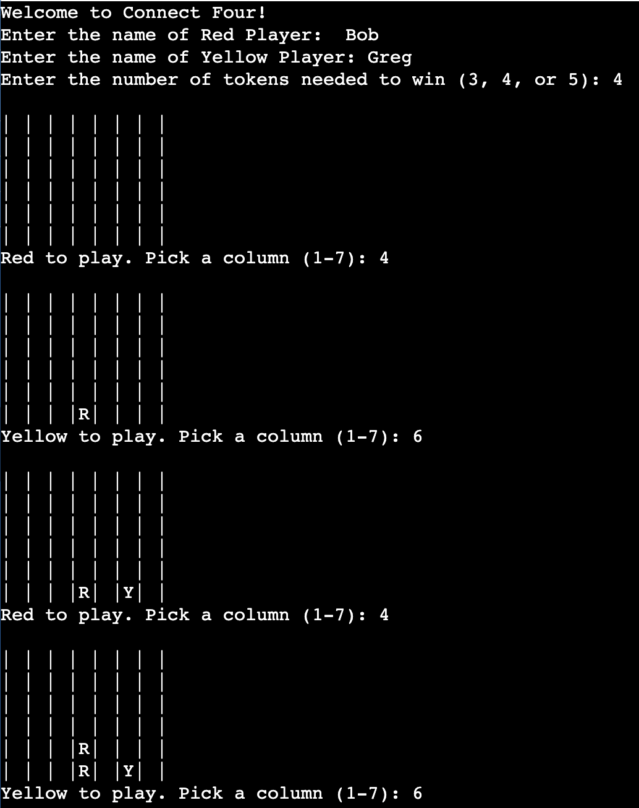
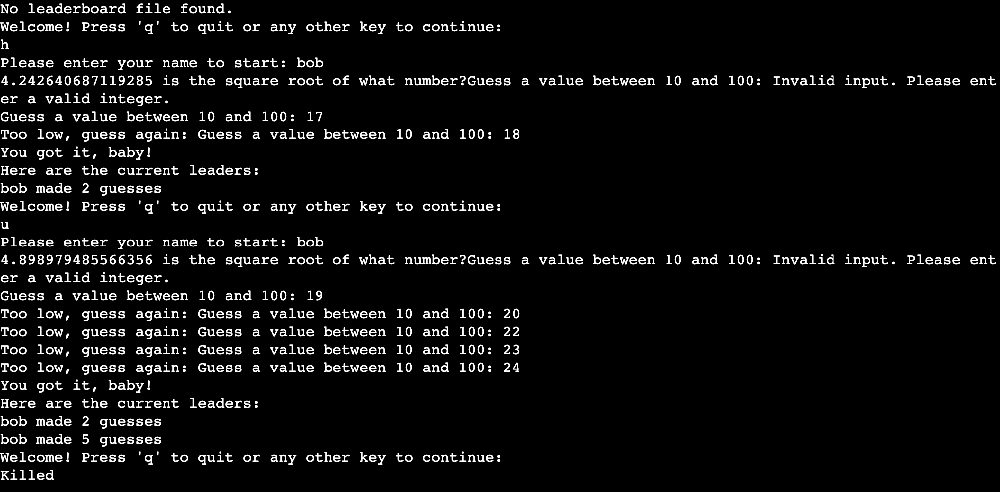
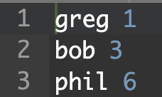

About Me
Hello! I’m Arya, a Computer Science student studying at Arizona State Univeresity. Welcome to my portfolio!
Projects
-
Countdown Circular Economy Solutions - Ghana Plastic Upcycling
- Built a scalable process to upcycle HDPE plastics into school furniture for children in Ghana, ASU Change the World 2024 winner.
- View Project Document
-
How Has the Frequency and Severity of Alcoholic Hepatitis Changed From Before the COVID-19 Pandemic to Now?
- Compared population groups to find correlation between the rise of alcoholic hepatitis in certain patients during the COVID-19 time period.
- View Project Document
Coding Projects
- Portfolio Website: You're looking at it now! Utilizes HTML, CSS, and JavaScript.
- Student Help System: A JavaFX application with GUI integration.
-
City Distance Calculation: Kruskal’s Minimum Spanning Tree Algorithm in C++ for city network optimization.
- View the code on GitHub
-
Connect 4 Game: Created using dynamic linked lists in C.
- View the code on GitHub 
-
Squareroot Guessing Game: Created in C with tracking leaderboard.
- View the code on GitHub
 
Contact
Email: achakr66@asu.edu
Location: Plano, TX, USA